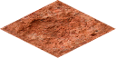
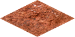

Wasteland
Wasteland terrain covers most of Martian surface and is not much
suitable for agriculture. Irrigation channels can be built to improve
food production and roads can be used to decrease movement costs.
This type of terrain has little iron and silica deposits. In
battle, it will not provide any advantages to defender.
 |
|
 |
|
 |
Resource output
Improvements
Following improvements can be built on Wasteland terrain:
Roads
Irrigation